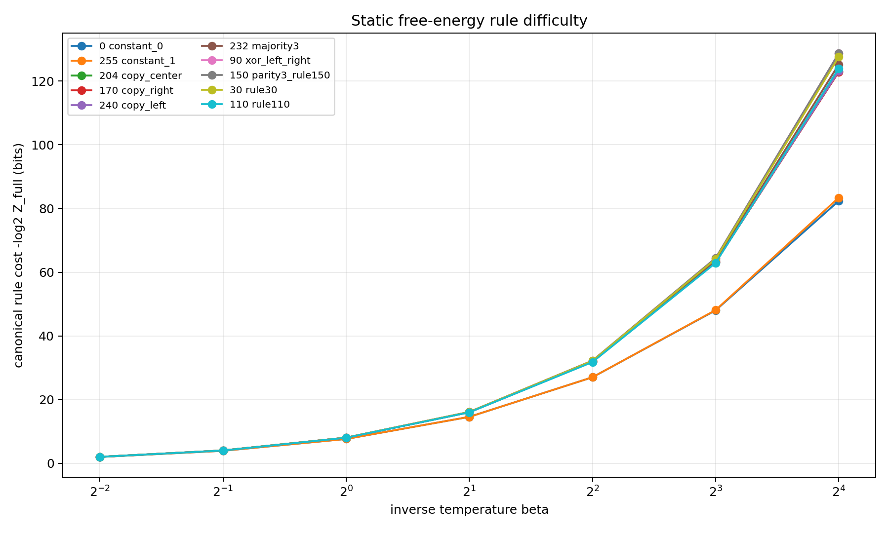

实验概览
目的
E22 把“逐个加入样本时的惊讶度能否累积为规则难度”改写为同一静态参数测度下的配分函数问题。它穷举3-bit 输入的全部部分标注状态、256条完整规则和全部样本加入顺序，检验逐步自由能增量是否为路径无关的端点势差。
运行
python experiment_static_free_energy_information_invariant.py
SHA256
8042df5e2818145ac3a8323c6343279efa5e2a11d01269c63071cdc125980514 script
8a7d2eb7b02a133cf1fc1a77fa807044dee7c6cdabe9cc8179d51813d55e7a12 result ZIP
原始 ZIP 位于E:\Downloads，不进入发布包。
为什么做、怎样判决
1. 问题
早期逐样本实验用 committee 对新标签的分歧估计信息增益，但单步增量强烈依赖样本顺序。需要区分两个对象：每一步的惊讶度可以依赖路径，而一条完整规则的累计成本是否存在顺序不变量。
2. 静态定义
固定网络协议和参考测度mu。对部分标注状态S定义质量或配分函数Z(S)，并令
加入样本i的广义惊讶度为
若所有状态都由同一个Z定义，则任意加入顺序pi必满足
单步惊讶度和阶段平均可以不同，端点总和必须相同。Shapley 平均则给出每个样本对端点成本的对称分摊。
3. 穷举协议
- 输入空间：3 bit，共8个状态；
- 部分标注状态：每点可为未标注/0/1，共
3^8=6,561个； - 完整规则：256条；
- 每条规则的样本顺序：
8!=40,320条； - prior 样本：2,097,152个网络；
- 同时计算 hard-conditioned 与多个 Gibbs beta 口径；
- 另存完整规则 microcanonical volume，便于与后续 SMC 体积曲线对接。
4. 判决边界
路径不变量本身是同一配分函数上的望远镜恒等式，不应包装成新定律。实验真正检查的是数值闭合、网络参考测度下端点成本的规则差异，以及此前逐样本信息量直觉能否被放进一个自洽静态状态函数。它不预测真实 SGD 的逐步路径。
结果、解读与边界
1. 数值闭合
2,097,152个 prior 样本、6,561个部分状态、256条规则和每条40,320个顺序全部完成。
max path-invariance error = 2.84e-14 bit
max stage-decomposition error = 1.42e-14 bit
max Shapley-efficiency error = 5.68e-14 bit
hard predictive normalization = 1.89e-15
beta=1 normalization error = 6.10e-08
因此，逐样本广义惊讶度确实是同一静态势函数的差；不同顺序重新分配每一步成本，但总成本严格等于完整规则端点自由能。

2. Rule150 仍是困难端点
Rule150 即3-bit parity。在 hard-conditioned 口径下，其完整规则成本约29.0000007 bit，在256条规则中排名最难；在beta=1 Gibbs 口径下成本约8.0625 bit，排名第二。这复现了此前逐样本启发式中 parity 困难的方向，但现在总量不再依赖加入顺序。
3. 理论意义
E22 建立了三者的严格关系：
- 当前训练集上的预测分支质量；
- 新样本的广义惊讶度；
- 完整规则的端点自由能或码长。
它为 Blier 与 Ollivier（2018）的 prequential coding、Bayesian evidence 和 Levin、Tishby、Solla（1989）的统计力学配分函数提供了共同语言，也说明 agreement 与 surprise 可以被理解为函数系综凝聚和自由能增量的两个侧面。
4. 边界
- 该不变量属于静态参考测度，不意味着 SGD 是 Gibbs 采样器；
- 每一步信息量仍依赖加入顺序，只有端点总和与 Shapley 平均具有相应不变性；
- 端点难度依赖网络、参数化、输入编码、loss 和参考测度，不是机器无关 K 复杂度；
- 3-bit 穷举确认数学闭环，但不能单独证明大网络上的定量外推。